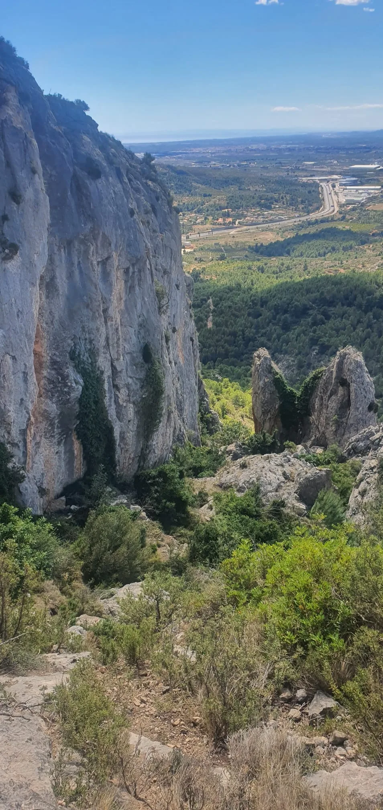
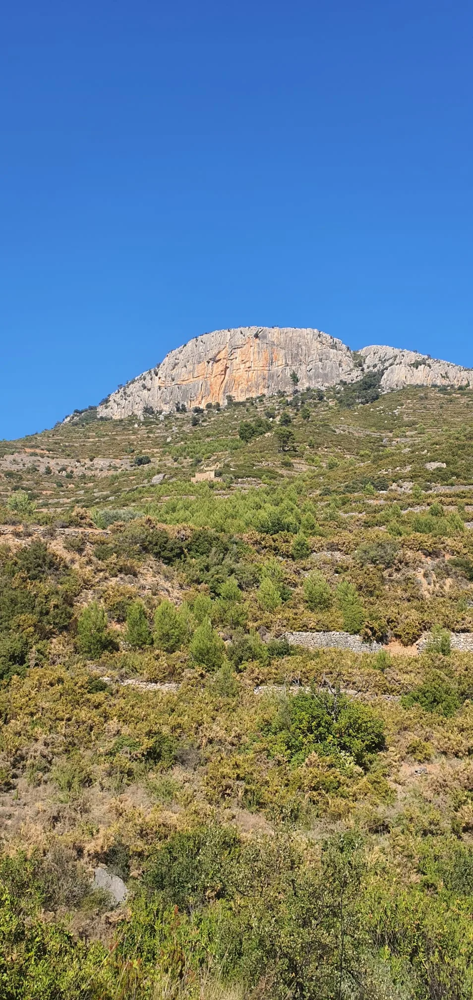
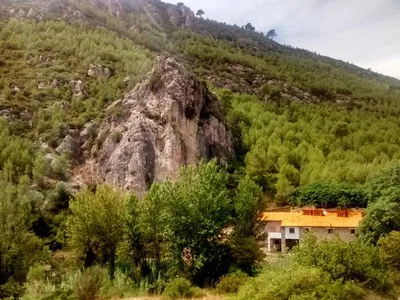
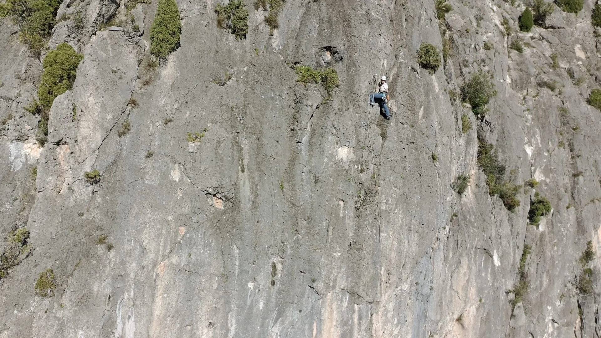
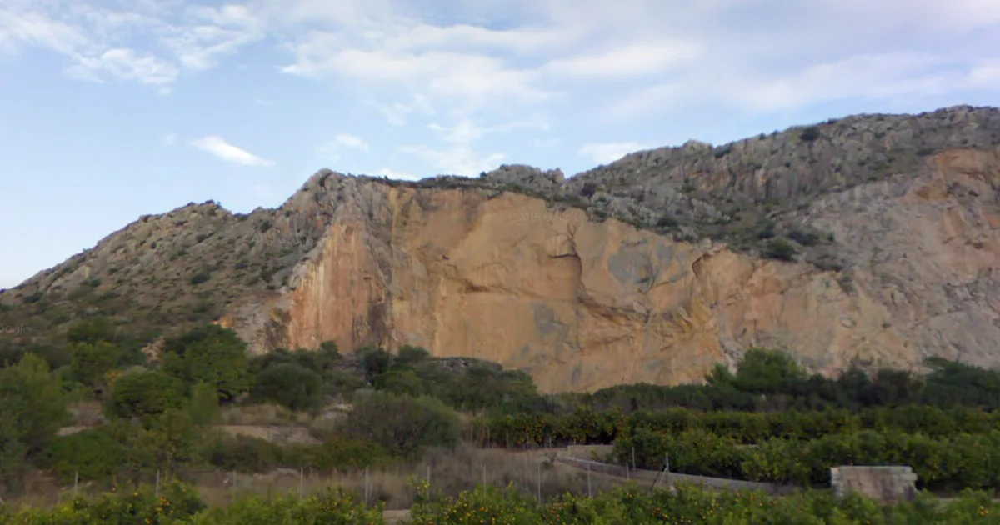
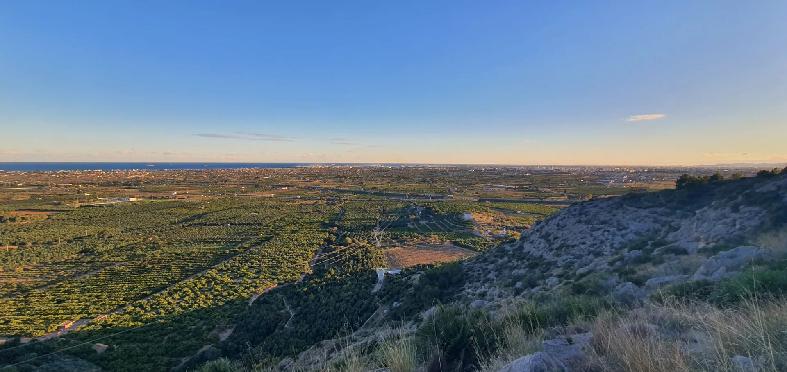

Escuelas de escalada en Castellón: roca, montaña y Mediterráneo
Castellón es uno de los destinos más atractivos para la escalada en la
Comunidad Valenciana. Su combinación de roca caliza, paisajes de interior
y sectores cercanos al mar convierte la provincia en un lugar ideal tanto
para quienes se inician como para escaladores con experiencia. En esta
guía encontrarás algunas de las escuelas más interesantes para descubrir y
disfrutar.
La provincia de Castellón ofrece una gran variedad de escuelas de
escalada repartidas entre la costa y el interior. Algunas destacan
por sus vías largas y técnicas; otras, por su accesibilidad o por
ser perfectas para pasar un día completo en la naturaleza. Esta web
reúne una pequeña selección de lugares recomendados para conocer la
riqueza vertical de este territorio.
El objetivo de esta guía: ayudarte a descubrir
escuelas de escalada con encanto, conocer sus características
principales y animarte a visitar Castellón desde una mirada activa,
deportiva y respetuosa con el entorno.
Desde una vista amplia, el paisaje de Castellón revela paredes,
barrancos, sierras y rincones rocosos que atraen cada año a muchas
personas aficionadas a la escalada. Este vídeo sirve como
introducción visual a un territorio donde deporte y naturaleza van
de la mano.
Vídeo de YouTube sobre paisajes de montaña y escalada.
Escalar en Castellón significa disfrutar de roca caliza de gran
calidad, sectores variados y entornos muy distintos entre sí. En una
misma provincia es posible encontrar escuelas soleadas para invierno,
zonas más frescas para los meses cálidos y paisajes que combinan
montaña, bosque y proximidad al mar. Esa diversidad es una de sus
mayores fortalezas.
Escuelas recomendadas en la provincia de Castellón
Esta selección reúne algunas zonas representativas del entorno de Castellón,
desde sectores cercanos a la Plana hasta rincones de interior más tranquilos.
Cada escuela ofrece una atmósfera distinta, por lo que conviene elegir según
el nivel, la época del año y el tipo de jornada que se busque.

La Botalària
Situada en el entorno de Borriol, La Botalària combina carácter y
relieve en un paisaje que se descubre poco a poco. Entre sus paredes
y recorridos, algunas vías dejan una huella especial, como si cada
tramo guardara una historia propia.
Nivel recomendado: intermedio

Figueroles
Figueroles destaca por su variedad de sectores y un ambiente que invita
a compartir la jornada. Es una escuela donde las casualidades parecen
ocurrir con facilidad y donde cualquier excusa puede convertirse en el
inicio de una nueva cordada.
Nivel recomendado: intermedio y avanzado

Roca del Molí (l'Alcora)
En l'Alcora, la escalada se mezcla con el paisaje de río y vegetación,
generando una experiencia más sensorial que técnica. El entorno invita
a detenerse, a recorrerlo con calma y a conectar con el terreno de una
forma más directa y cercana.
Nivel recomendado: iniciación e intermedio

Torre-Xiva
Torre-Xiva ofrece un entorno tranquilo, rodeado de naturaleza, donde la
escalada se vive sin prisas. Entre senderos y bancales, el paisaje rural
aporta una identidad única que acompaña toda la jornada.
Nivel recomendado: iniciación, intermedio y avanzado

La Cantera
Cercana a Castellón, La Cantera es una opción accesible y directa,
ideal para jornadas cortas. A pesar de su carácter práctico, el entorno
permite apreciar la verticalidad de la roca y encontrar momentos de
calma en medio de la actividad.
Nivel recomendado: intermedio

El Peturro
El Peturro se sitúa en un entorno más discreto, donde el paisaje y la
roca se descubren sin grandes referencias. Es un lugar que invita a la
introspección, donde cada visita puede sentirse distinta y abierta a
nuevas interpretaciones.
Nivel recomendado: intermedio
Consejos para visitar estas escuelas
Consulta siempre el estado de los accesos y el equipamiento antes
de ir.
Respeta el entorno natural, evita hacer ruido innecesario y no
dejes residuos.
Escoge sectores adecuados a tu nivel y revisa el material antes de
comenzar la actividad.
Ten en cuenta la orientación de la pared y la época del año para
planificar mejor la jornada.